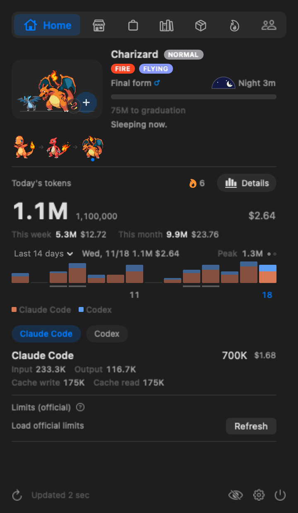

Your tokens.A little companion.
A Pokémon that grows as you code. Track your AI token usage and limits, right from your Mac’s menu bar.
Free · macOS 14+ · Apple Silicon
The tokens you already use become progress. Your usual workflow, with a little company.

Make room for
a little company.
You’ll need an Apple Silicon Mac with macOS 14 or later. No AI coding tool? Time mode grows your partner while you work. No PokeTokenBar account needed.
Release notesInstall from Terminal
- Open Terminal on your Mac. Quit PokeTokenBar first if it is running.
- Copy and run the command below.
- PokeTokenBar installs into Applications and opens. Your progress is kept.
curl -L https://github.com/w8385/PokeTokenBar-yp/releases/latest/download/PokeTokenBar-yp-arm64.zip -o /tmp/PokeTokenBar-yp.zip && ditto -x -k /tmp/PokeTokenBar-yp.zip /Applications && xattr -dr com.apple.quarantine /Applications/PokeTokenBar.app && open /Applications/PokeTokenBar.appPrefer a direct download?
Unzip PokeTokenBar-yp-arm64.zip and move PokeTokenBar.app into Applications.
The app is self-signed. If macOS blocks the first launch, follow the Gatekeeper steps in the installation guide. The Terminal command clears the quarantine attribute for you.
Open installation guideYour coding grows a Pokémon.
The tokens you use with AI coding tools hatch an egg and grow your partner. Keep coding, watch it evolve, and keep each graduated Pokémon in your collection.

Start with an egg
Your first tokens bring you closer to hatching.

Meet your partner
An egg hatches into a surprise Pokémon.

Code. Grow. Evolve.
Used tokens advance its evolution line.

Keep it in your Pokédex
Graduate your partner and welcome a new egg.
Illustration: Bulbasaur’s evolution line. Your partner and growth pace vary. No extra AI requests are made to grow a Pokémon.
Explore the app.
Each part of the app has its own page with real screens. Start with the one you care about.
- Usage trackerToday’s tokens per tool, official limits and resets, several Claude accounts, activity and recaps.
- Growing a partnerToken and time modes, click growth, Rare Candy, day and night, and tricky evolutions.
- Pokédex and BoxThe Gen 1–9 Pokédex, forms, the Box, friends beside your partner, trades and Scout Tickets.
- Battles and gymsThe Battle tab, eight gyms per region, the Elite Four and the champion, the hidden boss, replays and the Slack battle bot.
- Items and movesThe token Shop, held items and Mega Evolution, TMs, the Exp. Share, and nature, ability and IV items.
PokeTokenBar-yp is a fork of chattymin’s PokeTokenBar. The original made the companion and the usage tracker. Features marked Only in PokeTokenBar-yp exist only in this fork, so please report problems with them here, not upstream.
A workday,
with a side quest.
Your existing token usage raises a partner through its real evolution line. Then a new egg arrives, and the collection grows.
Hatch your first partner
An egg hatches after 100k tokens. Which Pokémon will it be?
Watch it grow
Keep coding, or keep working in time mode. Pick the source that suits your pace.
Keep the memories
Graduated partners stay in your collection. A fresh egg starts the next chapter.


Or, right beside you.
Let your partner out of the menu bar. Drag it anywhere and hover to check usage. Click an egg to pray, or a hatched Pokémon to pet it and help it grow. Right-click → Open opens the app.
Curious how it grows?
Try your pace, check the costs, and see what you can collect. Not using many tokens? Switch to time mode in the app.
Tokens per evolution
A three-form line without the repeat-species bonus or items. The 100k-token hatch comes first and is not in the table. One- and two-form lines split the same total differently.
| Rarity | Stage 1 | Stage 2 | Stage 3 (graduate) | Total |
|---|---|---|---|---|
| Normal | 2.5M | 5M | 7.5M | 15M |
| Rare | 6.25M | 12.5M | 18.75M | 37.5M |
| Epic | 10M | 20M | 30M | 60M |
| Legendary | 20M | 40M | 60M | 120M |
How long on my pace?
Pick a growth source and your pace. Token mode counts all AI-coding tokens, cache reads included.
Estimates assume the same pace every day. Items and clicks make it faster.
Your companion responds to your coding rhythm, changing its pose and caption as you work.
When you rest, it rests. Weekend menu bars are quiet.
On lighter days, your partner idles beside you.
Your normal pace. It keeps busy too.
When your agents are busy, your partner keeps up.
When a usage limit is close, it tires before you do. Take the hint.
A short animation marks each evolution and graduation.
Hatching has its own animation, and a Shiny hatch gets a different entrance. In time mode your partner works while you are active and sleeps while you are away.
Every graduation adds to your collection and brings a new egg.
| To collect | How it works |
|---|---|
| Species | Any Gen 1–9 evolution line, from 540 possible starts weighted by capture rate. Each hatch is a surprise. |
| Rarities | Four tiers: Normal, Rare, Epic and Legendary. Rarer partners hatch less often and need more tokens to graduate. |
| ✨ Shiny | A rare surprise at hatch: different colors that stay through evolution. |
| Natures | One of 25 natures per hatch gives each partner its character. |
| Branches | Branching evolution lines prefer paths you have not collected yet. |
| Pokédex | The Pokédex keeps one cell per species you have owned, up to #1025. The Box holds each individual Pokémon. |
16 tools. One companion.
Works with your coding tools
 Claude Code
Claude Code Codex
Codex Gemini CLI
Gemini CLI Antigravity
Antigravity OpenCode
OpenCode Hermes Agent
Hermes Agent Cursor
Cursor Grok CLI
Grok CLI Copilot CLI
Copilot CLI Kiro CLI
Kiro CLI Pi Agent
Pi Agent omp
omp Aside
Aside Kimi Code
Kimi Code- omo (senpi)
- Devin CLI
Limits depend on your login: official Claude, Codex and Antigravity limits, OpenCode Go allowances and Grok CLI subscription credits. Devin CLI and Kimi Code record no cost, so their cost shows as unavailable.
A few good questions.
Is it free?
Yes. PokeTokenBar is a free, open-source fan project. Shop items use the tokens you’ve already spent on coding, not real-money purchases.
Do I need an AI coding tool?
No. Time mode grows your partner from the time you are active on your Mac. Usage and limit tracking needs at least one supported tool.
Does it upload my usage logs?
No. Usage logs stay on your Mac. The app still uses the network for provider usage and limits, Pokémon data and sprites, service status and updates. It is not a fully offline app.
Does raising a Pokémon spend extra tokens?
No. The app reads usage from your supported coding tools. It doesn’t run model turns to grow your companion.
How is this different from PokeTokenBar?
PokeTokenBar-yp is an unofficial fork of chattymin’s PokeTokenBar (MIT). It adds the features under Only in PokeTokenBar-yp. Report problems with this fork here, not to the original project.
chattymin/PokeTokenBarCan I build it myself?
Yes. The Swift source, build instructions and issue tracker are on GitHub.
GitHub